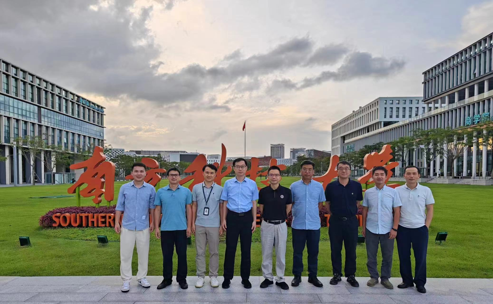

2024年9月7日，南方科技大学商学院与中国劳动经济学者论坛举办的第九届劳动经济学者论坛工作坊（中国深圳）顺利举办。该工作坊由叶茂亮老师和论坛秘书处组织，并受到叶老师主持的国家自然科学基金和广东省自然科学基金项目资助。

（图：部分与会嘉宾在大草坪和商学院院楼前合影）
以下转载劳动经济学者论坛公众号的会议总结。https://mp.weixin.qq.com/s/zJg1S5lfeow_jXKN4X8fbA
2024年9月7日，第九届劳动经济学者论坛工作坊（中国深圳）在南方科技大学顺利举行。本次会议由中国劳动经济学者论坛理事会和南方科技大学商学院联合主办。
9月7日上午的会议开幕式由南方科技大学商学院叶茂亮副教授主持。南方科技大学商学院应用经济系负责人孙宁，中国劳动经济学者论坛理事会主席、暨南大学经济学院院长王春超分别致辞。孙宁教授对与会的各位专家学者表示热烈欢迎，同时简要介绍了南方科技大学商学院尤其是应用经济学科的建设与发展，并衷心希望与会代表都能在劳动经济学者论坛这一劳动经济学学术盛宴上有所收获。中国劳动经济学者论坛理事会主席王春超教授在致辞中向各位参会代表对会议的支持表示感谢。
开幕式后进入主旨演讲环节，教育部“长江学者”特聘教授、暨南大学经济学院院长王春超教授，国家“万人计划”哲学社会科学领军人才、华南师范大学董志强教授等分别发表了主旨演讲。
王春超教授发表了题为《人工智能发展与高质量充分就业》的主旨演讲。王春超教授的研究探讨了人工智能发展背景下的人才需求、人才供给以及人工智能发展对高质量充分就业的影响。在分析人工智能对高质量就业的影响方面，城市层面的结果显示，人工智能对就业水平产生显著促进作用，且这种积极影响主要集中在东部地区。人工智能的发展对不同技能劳动者的就业水平影响具有异质性，特别体现在对低技能劳动者的挤出效应。从就业质量来看，人工智能整体上提升了城市就业质量水平，并且对城镇单位的就业比例、工资报酬、医疗保险和养老保险覆盖率等分指标均具有积极影响。从区域来看，就业质量提升的效应也同样突出地表现在东部地区。人工智能的发展使得不同技能劳动者的就业质量产生分化，对高技能劳动者的影响为正，但显著降低了低技能劳动者的就业质量。
随后，国家“万人计划”哲学社会科学领军人才、华南师范大学董志强教授发表了题为《利率市场化改革的就业效应》的主旨演讲。该文以中国人民银行取消金融机构贷款利下限为外生冲击作为准自然实验，利用2009-2016年全国税收调查数据，采用连续双重差分模型识别贷款利率完全放开与企业劳动力雇佣规模的因果效应。研究发现：贷款利率下限放开有助于企业扩大雇佣规模，且该促进效果在雇佣规模较小的企业和制造业企业中更加明显，不会因企业所在地区金融发展程度较低而被弱化。机制分析表明，贷款利率下限放开对企业雇佣规模的提升效果主要通过需求增长效应、缓解融资约束、要素替代效应实现。本文研究结论为理解利率市场化改革与企业就业吸纳能力之间的关系提供新的启示，表明有序推进金融市场化改革、健全金融有效支持实体经济的体制机制，具有“促就业”效应。
国家“万人计划”哲学社会科学领军人才、中国人民大学劳动人事学院教授罗楚亮发表了题为《传统文化、居住安排与中国农村居民主观幸福感》的主旨演讲。该文研究了居住模式对中国农村居民主观幸福感的影响。基于中国家庭收入调查（CHIP）2002、2013与2018年数据，该研究发现同居比例不断下降和同居与主观幸福感负相关的基本特征。代际同居没有提高甚至是降低了农村老年人和成年子女的主观幸福感，这一发现在利用宗族文化作为工具变量估计后仍成立，且一阶段估计结果表明文化对居住安排的影响在随着时间而减弱。上述结果在考虑人口迁移、计划生育政策、样本选择性偏误后依然稳健。社会规范的转变和经济条件的改善可能导致代际同住比例下降及其对主观幸福感产生负面作用。在考虑生育的影响后，代际同居降低农村居民主观幸福感的结论不变。本文结论表明，代际同住模式不再是农村偏好的居住方式，以代际同居来实现家庭成本共担已经并不合适。因此，在人口老龄化日益严峻与生育率持续下滑的背景下，需要加快实施适应于这种居住模式与文化转变的公共政策，增加养老金收入来提高农村老年人群的经济供养能力。
南方科技大学商学院叶茂亮副教授发表了题为《Impact of Education on Happiness: Evidence from Compulsory Schooling in China》的主旨演讲。幸福，既是一个关键的福利指标，也是常被忽视的教育的一种非货币收益。关于教育与幸福关系的文献尚无定论，也缺乏系统机制分析的因果推断。本研究利用中国义务教育法（CSL）的实施和中国综合社会调查的数据，研究教育对幸福的因果效应及中介机制。我们发现，义务教育法所导致的每增加一年的教育，会使幸福感得分在一个五点量表上提高0.074分（相当于0.089个标准差）。作者的进一步分析揭示，教育主要通过改善婚姻状况、感知的社会地位、收入、身心健康、医疗和养老保险覆盖，以及减少工作时间和增加休闲活动，间接提升幸福感。然而，教育对房屋所有权的不利影响部分抵消了这些收益。此外，异质性分析表明，CSL及其对教育的改善更好地提升了女性和来自弱势背景个体的幸福感，这可能有助于缩小性别差距，也帮助我们从崭新的幸福感角度来理解代际流动性。
9月7日下午的会议由南方科技大学商学院助理教授谢健主持。
北京大学经济学院施新政教授发表题为《Different Preferences for Flexible Work Arrangements Across Contexts: Evidence from a Two-Wave Field Experiment》的主旨演讲。该文估计了员工对于工作灵活性（包括工作时间和地点的灵活性）的支付意愿（WTP）。为此，我们与北京一家公司和一家在线招聘平台合作，进行离散选择实验。在实验中，我们要求求职者在固定工作安排和灵活工作安排之间做出选择，后者附带一个随机分配的工资。我们共进行了两轮实验，一轮在新冠疫情期间，另一轮在疫情之后。研究发现，平均而言，求职者在疫情期间的支付意愿并没有显著不同于零，但在疫情之后显著为正。然后我们提出了一个模型来解释这些发现，模型的模拟结果支持了实证发现。
香港中文大学（深圳）经管学院张鹏副教授及其合作者暨南大学经济学院王爽心助理教授发表题为《School Consolidation, School Attendance, and Education Inequality》的主旨演讲。该文研究了中国农村的撤点并校问题，发现这一政策对不同家庭背景学生的教育水平影响不同。来自优势家庭的儿童受益于此，表现为短期的小学出勤率更高和长期的中学完成率更高。相比之下，来自劣势家庭的儿童小学出勤率下降，长期影响表现为中学和高中的完成率也更低。这种差异性源于撤点并校导致教育质量和成本的同时增加，从而造成更多教育不平等的隐患。
西交利物浦大学国际商学院助理教授马明明发表题为《Biting the Hand That Teaches: Unraveling the Economic Impact of Banning Private Tutoring in China》的主旨演讲。中国的“影子教育”加剧了教育不平等和过度竞争。2021年7月，中国政府禁止了营利性质的学术辅导，以解决这一问题。该文使用工作招聘和公司注册的数据集，发现有显著的经济影响：与辅导相关的工作招聘减少了89%，公司新注册数量下降了50%，公司退出数量在四个月内增加了两倍。有更多儿童的城市经历了更大的就业机会和公司损失。由于相互关联的所有权结构，未针对性的艺术和体育辅导业务也受到了负面影响。该政策在18个月内导致了300万个工作岗位的损失和110亿元人民币的增值税损失。
浙江大学经济学院张海峰教授发表了题为《婴幼儿期疫苗干预与人力资本积累：来自乙肝免疫规划的证据》的主旨演讲。该研究借助1992年开始实行的乙肝疫苗免疫接种规划这一外生政策事件，运用出生队列双重差分估计方法研究了婴幼儿期疫苗干预对受影响群体人力资本形成的长期影响及其潜在的作用机制。研究发现，乙肝疫苗免疫接种规划显著提高了受影响群体的受教育程度。平均而言，与对照组群体相比，受影响群体的平均受教育年限增加了约0.38年，相当于同期平均受教育年限增长量的22%。异质性分析显示这一效应对于女性以及农村儿童的影响更强。
西南财经大学经济学赵国昌教授发表题为《家庭生育弹性、社会福利改善与育儿补贴设计：基于大型调查干预实验的证据》的主旨演讲。家庭生育决策对养育成本的敏感程度（即“生育需求弹性”），是制定最优育儿补贴政策的核心参数。囿于现有政策和数据的局限，对该弹性的估计以及生育支持政策的科学设计尚缺乏有效的分析框架。基于此，本文在我国某省开展了一项嵌套育儿补贴金额随机化情景的大型调查干预实验，调查样本覆盖全省逾100个区县代表性1万余户家庭。结果发现，每千元/月的育儿补贴可平均提升边际生育意愿约4.2个百分点。家庭生育弹性呈现出明显的非线性特点：在1200元/月金额范围内，每千元/月的育儿补贴对生育意愿的激励效应最高，达到7-9个百分点；当金额超过月均2000元，补贴的激励效应下降并不再具有统计显著性。基于充分统计量的分析框架，本文建立了补贴激励效应与社会福利改进之间的理论关联，并针对育儿补贴制度做出具体方案设计:在社会福利最大化的政策目标下，最优补贴金额应设定为 2000 元/月。考虑到政策效果在不同收入和孩次间存在明显的异质性，若能实现补贴金额与经济发展水平、家庭规模等特征锚定，能进一步优化现有的生育支持政策体系并提升资金使用效率。
浙江大学公共管理学院特聘研究员詹鹏发表题为《How and Why the Gender Pension Gap in Urban China Decreased from 1988 to 2018》的主旨演讲。自20世纪90年代以来，中国城市劳动力市场中的性别差距持续增加。然而与劳动力市场紧密联系的养老金性别差距却显著减少。我们试图解释养老金改革和其他哪些因素发挥了关键作用。文章回溯了中国城市地区多轨制养老金系统的演变过程，构造分解模型分析了不同性别养老金覆盖率和平均待遇金额的贡献。此外，文章还进行了出生队列分析，以更好地追溯性别差距变化背后可能的深层次原因。研究发现，养老金性别差距的缩小最主要原因是建国开始几十年女性进入正规部门的比例显著增加。多轨制养老金体系对养老金性别差距的影响主要体现在两个方面：一是，2009年开始建立的居民养老金制度有助于缩小性别差距；二是，多轨制养老金体系存在待遇和待遇增长的不平衡问题，持续扩大性别不平等。
最后，中国劳动经济学者论坛理事会主席王春超教授对会议做了简要总结。至此，本次会议圆满结束。